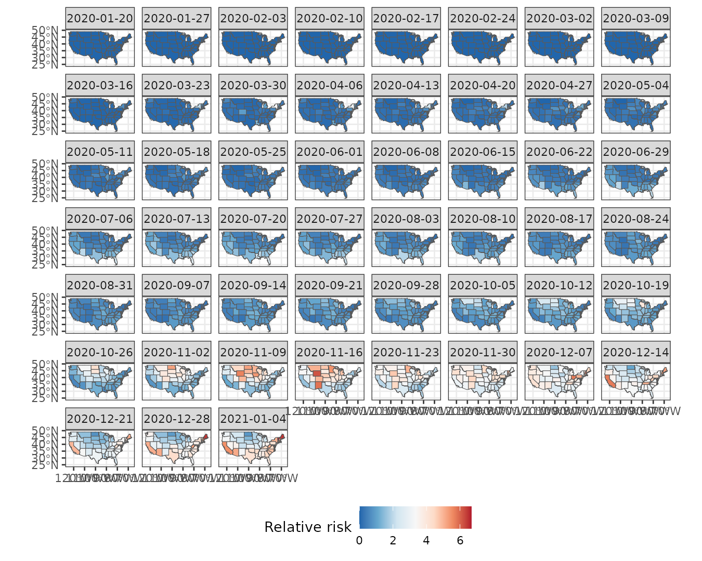

Weekly relative risk of COVID-19 in US states
Source:vignettes/articles/vg11-covid-usa.Rmd
vg11-covid-usa.RmdIn this vignette, we use sfclust to identify US states
with similar weekly relative risk of Covid-19 during 2020.
Load packages and data
The data for this application is available on our GitHub repository: https://github.com/ErickChacon/sfclust/blob/main/tools/data/usacovid.rds. It contains weekly data for 49 states, including the number of cases, the population, and the number of expected cases.
#> stars object with 2 dimensions and 3 attributes
#> attribute(s):
#> Min. 1st Qu. Median Mean 3rd Qu.
#> cases 0.0000 387.000 2921.000 8862.738 8653.00
#> population 4072852.0000 13333320.000 32645312.000 45820355.000 51060352.00
#> expected 175.6667 2934.647 6013.216 8862.738 11052.02
#> Max.
#> cases 316910.00
#> population 274041320.00
#> expected 55213.08
#> dimension(s):
#> from to offset delta refsys point
#> time 1 51 2020-01-20 7 days Date FALSE
#> space 1 49 NA NA WGS 84 FALSE
#> values
#> time NULL
#> space MULTIPOLYGON (((-88.05338...,...,MULTIPOLYGON (((-111.0467...Note that the dimension names are space and
time. Since sfclust expects them to be
c("geometry", "time"), you must specify the
stnames argument when using the function
sfclust() of the package.
Exploratory analysis
We begin by visualizing the weekly relative risk of Covid-19 across the 49 states. Higher risk levels are observed toward the end of the year.
ggplot() +
geom_stars(aes(fill = cases/expected), data = usacovid) +
facet_wrap(~ time) +
scale_fill_distiller(palette = "RdBu") +
labs(fill = "Relative risk") +
theme_bw() +
theme(legend.position = "bottom")
We can also examine the time series of relative risk for each state. Peaks are evident around April, July, and especially December.
usacovid |>
st_set_dimensions("space", values = 1:ncol(usacovid)) |>
as_tibble() |>
ggplot() +
geom_line(aes(time, cases/expected, group = space, color = factor(space)), linewidth = 0.3) +
geom_point(aes(time, cases/expected, group = space, color = factor(space))) +
labs(y = "Relative risk", x = NULL) +
theme_bw() +
theme(legend.position = "none")Spatial clustering
Model fitting
We assume that the logarithm of the relative risk can be explained by:
- A polynomial trend over
time - An autoregressive effect over
idt - An unstructured random effect across states and times
(
id)
We begin with one cluster per state (49 clusters total). Be sure to
set the dimension names: stnames = c("space", "time").
formula <- cases ~ 1 + poly(time, 3) + f(idt, model = "ar1") + f(id)
geodata <- genclust(st_geometry(usacovid), nclust = 49)
set.seed(123)
result <- sfclust(usacovid, graphdata = geodata, stnames = c("space", "time"),
formula = formula, family = "poisson", E = expected,
niter = 4000, burnin = 0, thin = 10, nmessage = 10, nsave = 100,
path_save = "usacovid-mcmc.rds")
result#> Within-cluster formula:
#> cases ~ 1 + poly(time, 3) + f(idt, model = "ar1") + f(id)
#>
#> Clustering hyperparameters:
#> log(1-q) birth death change hyper
#> -0.6931472 0.4250000 0.4250000 0.1000000 0.0500000
#>
#> Clustering movement counts:
#> births deaths changes hypers
#> 36 74 12 187
#>
#> Log marginal likelihood (sample 400 out of 400): -19196.71Summary of clustering steps:
- 36 cluster splits
- 74 cluster merges
- 12 cluster composition changes
- 187 updates to the minimum spanning tree
400 samples were retained (after thinning) from 4000 iterations. The final marginal likelihood was -19196.77.
Results
summary(result, sort = TRUE)#> Summary for clustering sample 400 out of 400
#>
#> Within-cluster formula:
#> cases ~ 1 + poly(time, 3) + f(idt, model = "ar1") + f(id)
#>
#> Counts per cluster:
#> 1 2 3 4 5 6 7 8 9 10 11
#> 10 9 8 6 5 4 3 1 1 1 1
#>
#> Log marginal likelihood: -19196.71The summary() output shows that 7 out of 11 clusters
contain more than one state. The largest cluster includes 10 states,
while the second includes 9, and so on. In order to verify the adequacy
of this clustering, we check the convergence using the
plot() function with option which = 3.
plot(result, which = 3)
The figure indicates that the marginal likelihood improves significantly within the first 100 iterations (after thinning) and stabilizes afterward from sample 200. Now, we can visualize the spatial cluster assignment and the predicted mean for each cluster:
plot(result, which = 1:2, legend = TRUE, sort = TRUE)The plot() output indicates that:
- The largest cluster is in the southwestern US, followed by clusters in central and northwestern regions.
- Mean relative risk increases gradually across the year, with different peaks per cluster.
The fitted function return an stars object
with prediction summaries after fitting, the cluster
assignment, the mean_cluster linear predictor, the inverse
of the linear predictor (mean_cluster_inv).
us_fit <- fitted(result, sort = TRUE)
us_fit#> stars object with 2 dimensions and 10 attributes
#> attribute(s):
#> Min. 1st Qu. Median Mean 3rd Qu.
#> mean -1.875691e+01 -1.84907558 -0.6834142 -2.1247489 0.24891764
#> sd 1.776338e-03 0.01074621 0.0184909 0.1442848 0.05030386
#> 0.025quant -2.177483e+01 -1.94097604 -0.7270388 -2.4117157 0.22542558
#> 0.5quant -1.874348e+01 -1.84907552 -0.6834142 -2.1234705 0.24891764
#> 0.975quant -1.581470e+01 -1.74954612 -0.6387514 -1.8450015 0.27627810
#> mode -1.874333e+01 -1.84907552 -0.6834142 -2.1231750 0.24891764
#> mean_inv 7.144593e-09 0.15738259 0.5048903 1.0000604 1.28263941
#> cluster 1.000000e+00 2.00000000 3.0000000 3.7551020 5.00000000
#> mean_cluster -1.875688e+01 -1.76075551 -0.6846120 -2.1258073 0.15042338
#> mean_cluster_inv 7.144842e-09 0.17191493 0.5042859 0.9636620 1.16233361
#> Max.
#> mean 1.898851
#> sd 1.847165
#> 0.025quant 1.841667
#> 0.5quant 1.898851
#> 0.975quant 1.956034
#> mode 1.898851
#> mean_inv 6.678214
#> cluster 11.000000
#> mean_cluster 1.634518
#> mean_cluster_inv 5.126985
#> dimension(s):
#> from to offset delta refsys point
#> time 1 51 2020-01-20 7 days Date FALSE
#> space 1 49 NA NA WGS 84 FALSE
#> values
#> time NULL
#> space MULTIPOLYGON (((-88.05338...,...,MULTIPOLYGON (((-111.0467...Empirical risk per cluster
We use the cluster assignments to analyze and visualize the empirical
relative risk per cluster. This can easily be done with the
plot_cluster_series() function:
plot_clusters_series(result, cases/expected, sort = TRUE, clusters = 1:10) +
facet_wrap(~ cluster, ncol = 5) +
scale_x_date(date_breaks = "2 months", date_labels = "%b") +
labs(y = "Relative risk")This figure shows distinct epidemic dynamics by cluster:
- Cluster 1 shows an increasing risk with a peak in July–August.
- Cluster 2 peaks around November–December, with a decline by year-end.
- Cluster 3 shows early activity around March and high risk near January.
- Clusters 4–7 follow various intermediate trends.
- Clusters 8–11 exhibit less typical behavior.